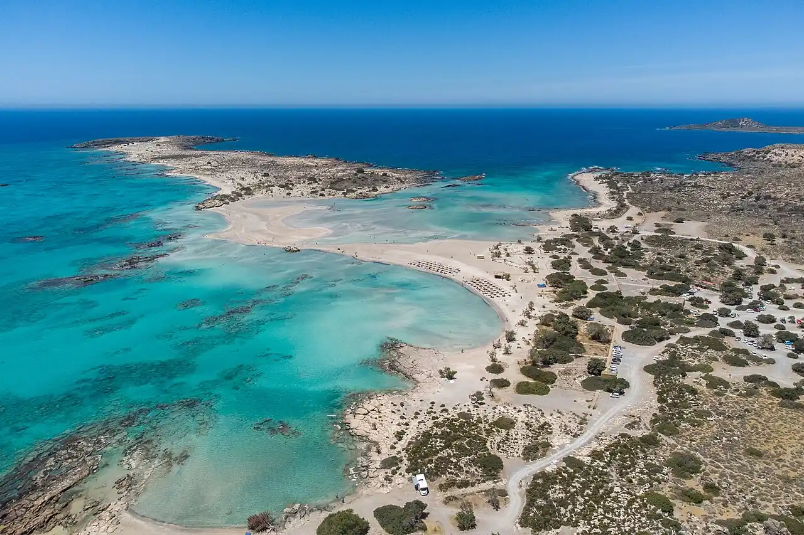

Elafonissi
Crète, Grèce · baignade

Lagune peu profonde au sable teinté de rose par les coquillages, à la pointe sud-ouest de la Crète. On rejoint l’îlot à pied dans l’eau ; le site est protégé au titre de Natura 2000.
- Lieu
- Crète, Grèce
- Niveau
- Débutant
- Activités
- baignade
- Type d'eau
- Mer / océan
- Coordonnées
- 35.27, 23.54 (position approximative du secteur)
Dangers à connaître
- Par vent fort, courant sensible dans le passage vers l’îlot.
- Peu d’ombre : chaleur intense en été.
Le conseil d'Ocean Buddy
Ne ramasse pas de sable rose et reste sur les chemins de l’îlot : les dunes sont protégées.
Ouvrir dans Ocean Buddy Télécharger sur l'App Store
Source : Fiche Ocean Buddy · septembre 2026 · à vérifier localement.